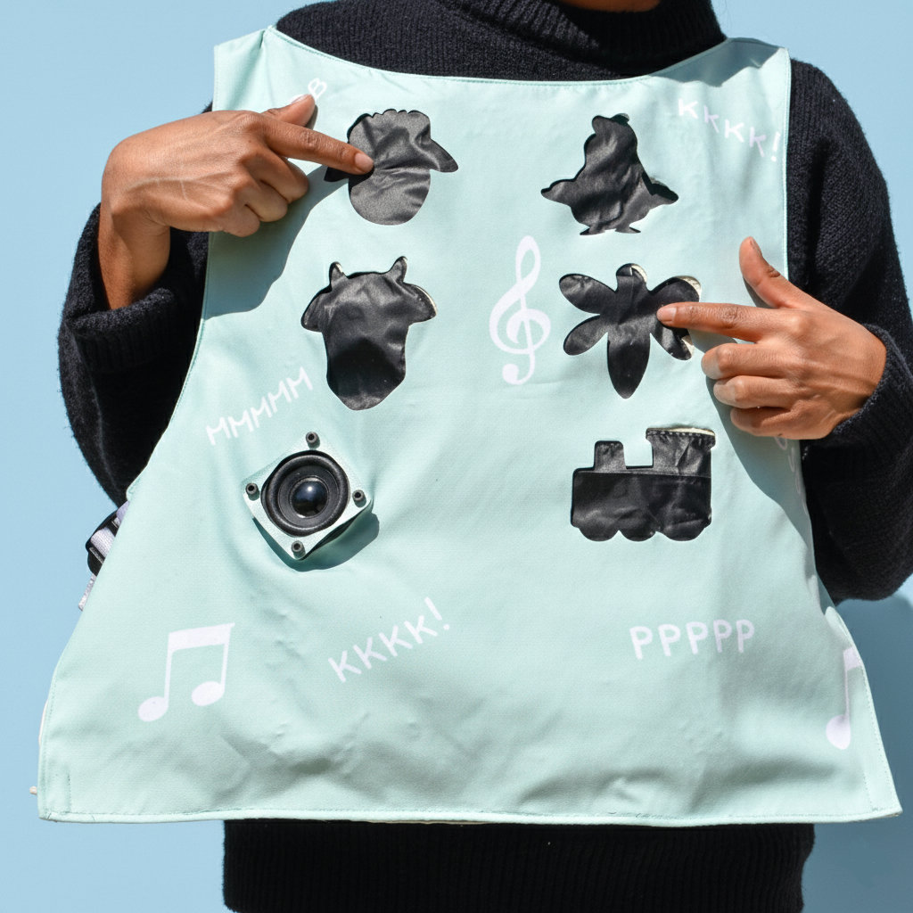

Stellar Vest
Stellar Vest
Chaleco con fibra óptica que traza una constelación real sobre la tela.
- Año
- 2026
- Técnica
- Bordado con fibra óptica
- Materiales
- Fibra óptica, LED, tela de algodón
- Tipo
- Proyecto académico
Diseño textil | Fabricación digital · Puebla
Stellar Vest
Chaleco con fibra óptica que traza una constelación real sobre la tela.
 Biomaterials
Biomaterials
Fibras teñidas y curadas a partir de materiales orgánicos de origen local.

FoniversoPrenda interactiva que traduce sonido en patrones bordados a mano.
Colección cápsula inspirada en la paleta y textura del durazno.
 Harmony Heaven
Harmony Heaven
Serie de tejido de punto que explora ritmo y repetición en la trama.
 Woven Fabric
Woven Fabric
Estudio de telar plano con hilos de distintas texturas y pesos.
Escríbeme y lo platicamos.